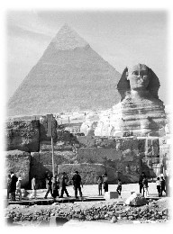

| La tournée de conférences de Maître au Moyen-Orient et en Afrique du Sud |
 L'Égypte, une nation érigée sur les piliers d'anciennes civilisations mystiques, a subi les influences à la fois des cultures de l'Est et de l'Ouest tout au long de son évolution longue de plusieurs milliers d'années. Plusieurs saints originaires des deux sphères de la planète ont apporté le message de Dieu en ce pays. Dès cinq heures le matin, tous les membres des familles pieuses islamiques répondent à l'appel des chants sacrés provenant des mosquées, et se rendent à la mosquée la plus proche pour leur prière matinale. (Au rassemblement pour cette prière musulmane, on peut apercevoir des milliers de personnes faire leur prière qui est très similaire à la «Méditation sur le Son» de la Méthode Guan Yin). Faisant face à La Mecque, la ville sainte de l'Islam, les musulmans dévoués prient cinq fois par jour, le matin, le midi et le soir. Avant chaque prière, ils doivent d'abord purifier leur corps, leurs paroles, et leur esprit. Le vendredi est la journée du sabbat islamique, qui est en fait une journée de grande «méditation de groupe» pour toute la famille. Le moment le plus important de l'année est le Ramadan - le mois sacré islamique, pendant lequel les musulmans dévoués s'adonnent à un jeûne («swam», en arabe) du lever du soleil au coucher du soleil et donnent l'aumône aux pauvres et aux nécessiteux. La foi pieuse musulmane en leur Dieu Allah a généré une importante force centripète dans le pays et a attiré l'attention et les bénédictions des Maîtres illuminés.
La ville du Caire était sensée être le troisième arrêt de la tournée de conférences de Maître Suprême Ching Hai au Moyen-Orient et en Afrique du Sud. Des messagers Guan Yin ainsi que des frères et soeurs initiés de partout dans le monde sont arrivés à l'avance afin de faire les préparatifs nécessaires. Pendant ce processus, beaucoup de monde se sont intéressés aux enseignements de Maître et ont subséquemment appris la Méthode Pratique.
Comme les musulmans témoignent d'une foi solide en Dieu depuis leur enfance, ils avaient de très bonnes expériences intérieures en se livrant à la Méthode Pratique, ce qui leur donnait une grande confiance de pouvoir aider l'oeuvre de Maître. Plusieurs de ces initiés en devenir se sont portés volontaires afin d'aider à la préparation de la conférence, travaillant jour et nuit en compagnie des messagers Guan Yin. Quelques-uns des initiés en devenir étaient des instructeurs de yoga. Comme ils avaient énormément bénéficié de la Méthode Pratique, ils ont organisé plusieurs séminaires afin de présenter la Méthode Guan Yin à leurs étudiants de Yoga, leur suggérant de suivre la Méthode Pratique et la Méthode Guan Yin. M. R. Jayaram, un instructeur de yoga célèbre de l'Ambassade de l'Inde en Égypte, a généreusement offert l'usage d'une salle au sein de l'Ambassade pour des fins de méditation de groupe à n'importe quel moment. Il a aussi fortement recommandé à ses étudiants de pratiquer la Méthode Guan Yin.
C'est avec plaisir que plusieurs ministres et hauts dirigeants gouvernementaux, locaux et étrangers, ont accepté notre invitation. Parmi ceux-ci, l'ambassadeur de la Zambie en Égypte avait pris des dispositions afin qu'une voiture du consulat rencontre Maître Suprême Ching Hai à l'aéroport.
À la mi-octobre, les messagers Guan Yin ont rencontré l'éditeur en chef de la section des sports du «Al-Ahram News», le plus important journal de l'Égypte et du Moyen-Orient. Étant lui-même végétarien, il était très intéressé par la Méthode Guan Yin et a offert gratuitement un article d'une pleine page afin de partager la bonne nouvelle avec les lecteurs. De plus, l'équipe du journal nous a aidés à imprimer d'énormes affiches de Maître que nous avons pu placer aux endroits les plus stratégiques tout au long de la rue Al-Ahram afin d'attirer l'attention des passants.
Après la mi-octobre, nous nous sommes rendus aux locaux du «Egypt Today», la revue anglophone la plus populaire en Égypte. L'expert en art informatique de la revue a passé trois jours à perfectionner le design de l'annonce de la conférence, et a éventuellement terminé sa composition. Il a commenté : " Expérimenter joie, bonheur et sagesse à travers la méditation est précisément le message que nous, les gens de l'Égypte, voulons entendre. Je suis honoré de pouvoir vous aider. "
Quand le coordinateur de leur département a regardé l'annonce, il a été profondément attiré par la photographie de Maître et a demandé à nos frères et soeurs initiés, «Quel âge a-t-Elle ? » Quand nous l'avons invité à deviner, il a pris une photo de Maître et l'a étudiée attentivement. En se grattant la tête, il a dit, " Elle ne peut qu'avoir 25 ans, tout au plus ! Comment peut-Elle être un Maître à un si jeune âge ? " Nos frères et soeurs initiés ont ri et lui ont dit, " C'est le pouvoir de la Méditation Guan Yin ! " " Alors nous devons aller à cette conférence sans faute ! " Afin de s'assurer de pouvoir assister à la conférence, il a demandé à sa secrétaire d'annuler tous ses rendez-vous d'affaires de ce jour là.
Durant cette période, nous nous sommes aussi rendus aux établissements de la publication mensuelle la plus populaire d'Égypte, «The Community Times.» Après avoir lu des écrits sur les enseignements de Maître, l'éditeur en chef a rédigé gratuitement un article appuyant les bienfaits de pratiquer la Méthode Guan Yin.
À la fin d'octobre, nous avons été invités à rencontrer le directeur de la rédaction de la revue «Teen Stuff», un magazine dont la vocation est de présenter aux adolescents un divertissement de bonne qualité ainsi que du matériel éducatif. Le directeur a dit : «La Méthode Guan Yin enseigne aux gens à se purifier, à être des personnes ayant de bonnes moeurs et à se conduire comme de bons citoyens. Pratiquer la Méthode Guan Yin peut aider à purifier les corps, les esprits et les âmes des adolescents d'aujourd'hui.» Elle a aussi accepté de demander à de jeunes journalistes d'interviewer les messagers Guan Yin.
En novembre, «WAFD News,» le troisième plus grand journal arabe en Égypte a mené des entrevues avec les messagers Guan Yin et a publié gratuitement par deux fois des articles spéciaux sur les enseignements de Maître et a fait la publicité de Sa conférence. L'interviewer a écrit, " C'est un grand plaisir de pouvoir rapporter une si bonne nouvelle à nos lecteurs. " Quelques jours avant la conférence, le directeur de «Cairo TV Tower» nous a aidé à enregistrer une entrevue avec Maître, qui sera diffusée à «Good Morning Egypt,» une émission jouissant des plus hautes cotes d'écoute au pays. La journaliste affectée à cette émission a été profondément impressionnée par le profil de la vie de Maître et par Ses bonnes actions posées à travers le monde. Elle espère sincèrement que ce sera possible de présenter Maître à des millions de spectateurs égyptiens.
À travers les diffusions médiatiques et la distribution de dépliants, l'annonce de la conférence de Maître est parvenue dans tous les recoins du Caire. Notre ligne d'information a reçu un flot constant d'appels de gens intéressés à en savoir davantage sur les enseignements de Maître et sur la conférence. Et en quelques jours seulement, plus de 4 000 personnes ont visité notre site Internet arabe, tout nouvellement créé.
Bien que nos messagers Guan Yin et nos frères et soeurs initiés venaient de plusieurs pays et parlaient des langues différentes, ils ont miraculeusement réussi à bien s'entendre et à bien coopérer. En trois jours seulement, ils ont distribué plus de 200 000 dépliants, parsemant ainsi l'amour et la grâce de Maître partout au Caire et dans les régions adjacentes. La réponse a été particulièrement sensationnelle dans les universités et les collèges du Caire. Plusieurs étudiants et professeurs d'université ont voulu apprendre la Méthode Pratique et ont aidé, avec grand dévouement, à la traduction des documents de publicité. Un professeur de l'Université américaine a aidé à la traduction. Alors qu'elle observait les frères et soeurs initiés provenant de pays différents, travaillant ardemment à distribuer des dépliants dans les rues du matin au soir pendant plusieurs jours d'affilé, en gardant toujours le sourire aux lèvres, elle a vraiment été touchée. " Votre excellent travail bénévole démontre que vous êtes le groupe international le mieux organisé qu'il nous ait été donné de voir au Caire. "
Immédiatement après avoir reçu des dépliants, plusieurs musulmans pieux, habillés de leur costume musulman traditionnel, tenaient, dans la rue, des discussions en groupe afin d'étudier les enseignements de Maître. Très souvent, les résultats de leur discussion étaient exprimés par leurs gestes de «thumbs-up» (chapeau), et par des remarques encourageantes : " Vous faites de bonnes choses ! " Ils nous aidaient même en criant dans les rues et en distribuant des dépliants de manière encore plus enthousiaste que le font nos frères et soeurs initiés. Ainsi, nous pouvions observer le coeur pur des Égyptiens.
Plusieurs propriétaires de restaurants et de cafés aimaient tellement les affiches du Maître qu'ils se faisaient compétition entre eux afin de pouvoir les exposer dans leurs commerces.
La réponse à l'annonce de la conférence à venir de Maître a été si sensationnelle que presque personne au Caire et dans les alentours ignorait Sa visite imminente. Bien que la conférence ait éventuellement été annulée, quelques jours avant sa tenue, à cause d'une application qui n'avait pas obtenu l'approbation, un flot continuel de gens se rendait malgré tout au lieu de réunion. Selon les reportages locaux, entre 16 h et 18 h, plusieurs milliers de spectateurs s'étaient rendus sur les lieux.
Sachant que la conférence avait été annulée, de nombreux futurs initiés pleuraient tristement en disant, " Quand nous pensons à Maître, nous nous sentons comme si nous flottions dans un océan d'amour. Nous avons hâte de La voir. " Plusieurs personnes enthousiastes ont offert leur aide afin d'appliquer pour obtenir un nouveau permis en vue de présenter la conférence dans un autre endroit.
Le jour où la conférence devait avoir lieu, notre Maître compatissante est apparue à l'hôtel où logeaient les frères et soeurs initiés. Elle a sourit, en disant que cette situation n'était qu'un malentendu et qu'un jour ces gens comprendront. Peu importe, nous savions que Sa présence avait déjà créé des effets positifs. Comme la pluie arrosant le désert, l'amour infini de Maître ainsi que Son message de Vérité avaient déjà imprégné plusieurs coeurs assoiffés en Égypte. Aujourd'hui, Maître est devenue un point de mire auprès des Égyptiens et de leurs médias.